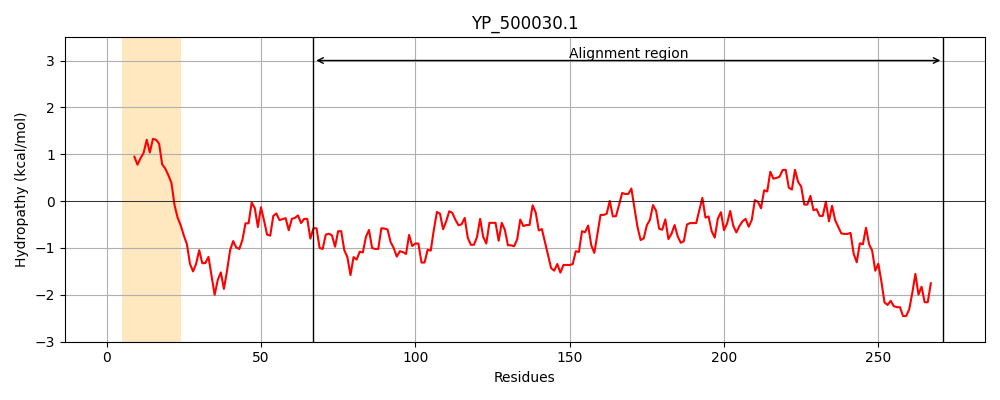
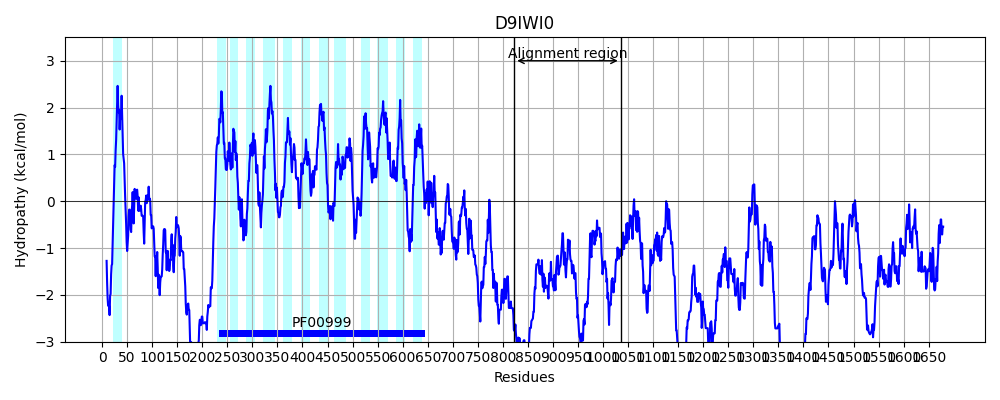
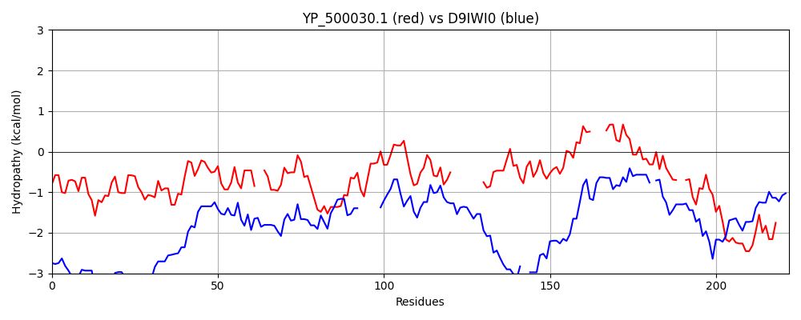

Hit Accession: D9IWI0
Hit TCID: 2.A.36.7.9
Hit Description: gnl|BL_ORD_ID|3509 gnl|TC-DB|D9IWI0|2.A.36.7.9 Sodium/hydrogen exchanger (Fragment) OS=Plasmodium falciparum GN=nhe-1 PE=4 SV=1
Mach Len: 222
e:0.000027
Query TMS Count : 1
Hit TMS Count: 13
TMS-Overlap Score: 0.000000
Predicted Substrates:CHEBI:9175;sodium(1+), CHEBI:5584;hydron
BLAST Alignment:
Score: 105 , Bit scores: 45 bits, E-value: 2.7e-05, Alignment length: 222, Percentage identity: 22
Query: 67 NVGLQDKINELENKMNLSFDNHELRTVFTDKEIAKYHTYKKVTNTEFIKILLRTFKNENYKE--ECLRAIILEFDNKKTIKENIGDKQWTFSTGEKEIVIKSNDVLQGINTLIKKYNETHI---------YCMNKLEYFSMHFTNNIADSNTVYQSLHQIYLK----TILSLYIDISSTNKIGHEKFYV--NLIEFYNEWNNKKIKFKKKTEKRINKNRNSF 271
N +Q+ N K N ++ N++ D + NT I L + + +E Y + C A I DNKK + EN+ DK F+ + N+ + T + K++ ++ Y N +Y + H NN ++N ++ ++H I+ + ++S I I ++ K G + V N +Y+ ++++ + +KN + F
Sbjct: 823 NNNIQNDDNNKNYKNNKNYKNNKNNNNKVDNNDHEKENNHMYNNTHNITNLSKLYNDEYYNKGKNCENANINGGDNKKNVYENLRDKTNFFND------LTGNEDTSDVYTYLNKHSYNNVSNIRGGYNYYYGNNNKYNNNH--NNKNNNNNIHNNIHNIHNRYRSLNVISRKISIDNSYK-GEMRINVIRNNDNYYSSYDDEDHNYTNINRSLSSKNFDHF 1035 | Protein Hydropathy Plots: |
|---|
|  |  |
Pairwise Alignment-Hydropathy Plot:
|
|---|
|  |